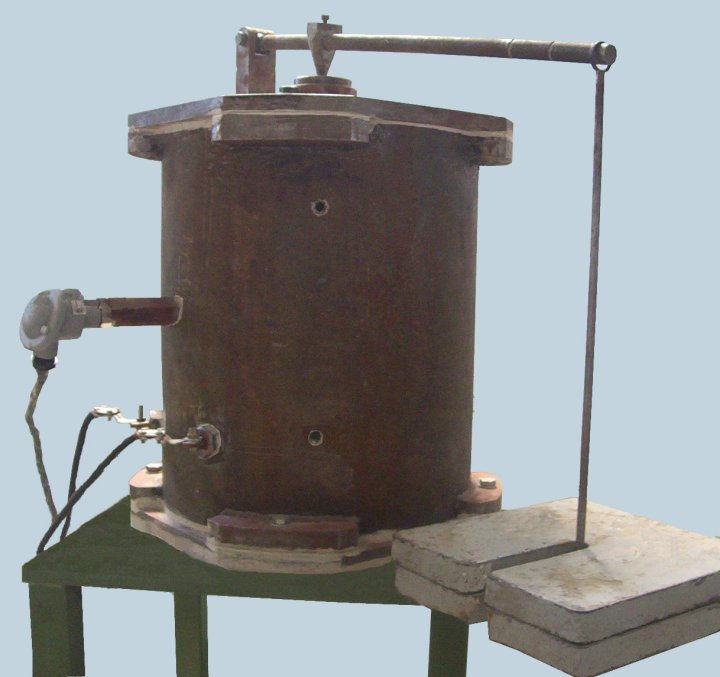
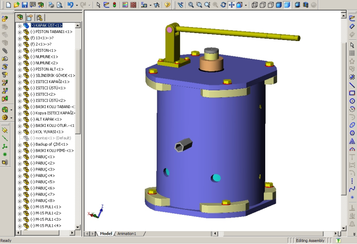
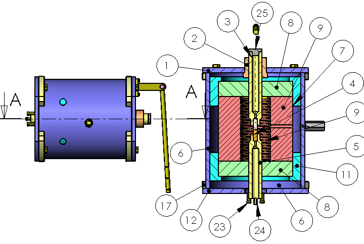
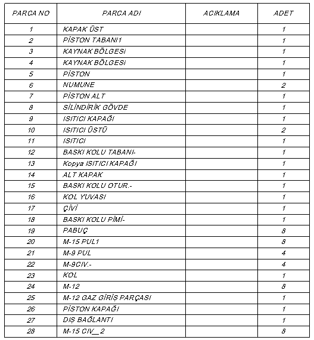
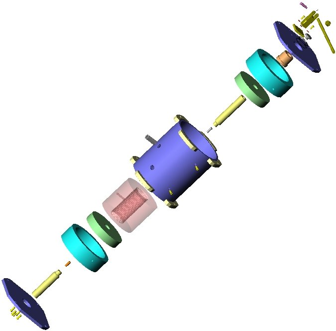

Yrd. Doç. Dr. Yýlmaz Gür
Makine Müh. Böl.
Balýkesir Üniv. Müh. Mim. Fak.
Ekim 2005, Balýkesir
Not: Orijinal olarak TurkCADCAM.net
Dergisi 2. Sayýsý için hazýrlanmýþ bu
makale, ilk kez Ekim 2007'de TurkCADCAM.net Portalý'ndan
yayýnlanmaya baþlamýþtýr.
ÖZET
Bu çalýþmada, katý hal Difüzyon kaynaðý yapýlabilmesi için geliþtirilmiþ olan laboratuar test aparatýnýn, SolidWorks 3 boyutlu tasarým programý ile yapýlan tasarýmý anlatýlmýþtýr. Kaynak test ünitesi; gaz arýtma, sýcaklýk kontrolü ile güç ve Difüzyon kaynaðý cihazý olmak üzere üç birimden meydana gelmekle birlikte burada sadece aktif olarak Difüzyon kaynaðýnýn gerçekleþtiði Difüzyon kaynak cihazýnýn tasarýmý SolidWorks ile yapýlmýþtýr.
GÝRÝÞ
Difüzyon kaynaðý genel anlamda birleþtirilecek parçalarýn ara yüzey tabakalarýnda difüzyonu saðlayacak kadar yüksek sýcaklýklarda, aradaki boþluklarýn plastik deformasyonla kapanmasýyla atomik seviyede baðlarýn oluþtuðu bir katý hal sürecidir [1]. Bir baþka tanýmlamaya göre ise katý hal Difüzyon kaynaðý ölçülebilir bir plastik akma meydana gelmeksizin birleþtirilecek parçalarýn ergime noktasýnýn altýnda bir sýcaklýkta birbirlerine doðru basýnç uygulanmak suretiyle saðlanýr [2].
Özellikle günümüzde Difüzyon kaynaðý yüksek dayanýmlý kaynak baðlantýlarýna ihtiyaç duyulan uçak, uzay ve savunma sanayilerinde, nükleer santrallerde kullanýlmaktadýr [3]. Ayrýca endüstrideki soðuk hava depolarýnda, dondurucularda ve gaz dolum tesislerinde alüminyum ve bakýr boru baðlantýlarý ýsý iletimi ve yoðunluk gibi iki faktöre baðlý olarak montajý düþünülür. Sökülemeyen baðlantý yapma durumu söz konusu olduðunda, her iki metal de oksitlenmeye karþý hassas olduklarýndan vakum altýnda difüzyon kaynaðý yapmak en uygun yoldur. Fakat bu yöntem ilk yatýrým masrafýnýn çok olmasý nedeniyle pek cazip görülmemektedir. Bunun yerine koruyucu gaz altýnda difüzyon kaynaðý seti tasarlanmýþtýr.
DÝFÜZYON KAYNAK CÝHAZI
Koruyucu gaz altýnda difüzyon kaynak cihazý, numune parçalarýn içine yerleþtirildiði, üzerlerine bir kol vasýtasýyla basýnç uygulandýðý, ve argon koruyucu gaz ortamýnda yüksek sýcaklýða maruz býrakýldýklarý iç içe geçmiþ iki çelik silindirden meydana gelmiþtir. Ýçteki silindire Kanthal firmasýnýn özel yalýtýlmýþ rezistanslý ýsýtma fýrýný mevcuttur. Numuneler üzerine uygulanmasý gereken basýnç, sistemin üst kýsmýna yerleþtirilen bir manivela kolunun ucuna asýlan yükler vasýtasýyla saðlanmaktadýr. Arýtýlmýþ argon gazý alt kýsýmdan silindirin iç kýsmýna verilmektedir (bakýnýz Þekil 1).

Þekil 1. Difüzyon kaynak cihazý [4]
Bu çalýþmada ise difüzyon kaynak cihazýnýn, parametrik tasarým özelliðine sahip SolidWorks 3-boyutlu mühendislik tasarým programý ile dizayný yapýldý (Þekil 2). Cihaz, aþaðýda belirtilen parçalarýn montaj edilmesi ile meydana gelmiþtir; 1. Alt kapak, 2. Baský kolu oturma yüzeyi, 3. Baský kolu pimi, 4. Baský kolu tabaný, 5. Dýþ baðlantý, 6. Gaz kapaðý, 7. Isýtýcý kapaðý, 8. Isýtýcý üstü, 9. Isýtýcý, 10. Üst kapak, 11. Kol yuvasý, 12. Baský kolu, 13. Numune, 14. Pabuç, 15. Alt piston, 16. Piston, 17. Piston kapaðý, 18. Piston tabaný, 19. Piston, abaný alt, 20. Silindirik gövde, 21. M12 Gaz giriþ parçasý, 22. M9 cývata, 23. Kol 24. M12 cývata, 25. Kaynak edilen kýsýmlar 26. Piston Kapaðý 27. Dýþ baðlantý 28. M15 cývata (Þekil 3).

Þekil 2. Kaynak Cihazýnýn SolidWorks'daki montaj hali

Þekil 3. Difüzyon Kaynak Cihazýna ait parçalarýn SolidWorks
teknik resim sayfasýna aktarýlmasý ve numaralandýrýlmasý
Difüzyon kaynak cihazýnýn oluþturan her bir parça ayrý ayrý parametrik olarak tasarlandý. Yani bottom-up denilen en alt birimdeki parça tasarýmýndan montaja doðru gidildi. Bunun için montajý oluþturan parçalarýn her biri ayrý bir parça dosyasýna kaydedildi. Daha sonra montajý oluþturacak olan parçalar montaj sayfasýna aktarýldý. Ayný boyutlu cývatalar ise sadece bir kez çizilip istenildiði kadar montaj sayfasýna dahil edilebilir. Böylece 8 cývata yerine sadece 1 cývata dosyasý yaratýldý ve bunlar daha sonra montajda istenildiði kadar montaj sayfasýna getirildi. Daha sonra da tüm parçalar aralarýnda iliþki tanýmlamak suretiyle birleþtirildi. Böylece tasarýmda aksayan bir nokta olup olmadýðýný kontrol edip görmek mümkün hale geldi. Parçalar arasýnda tanýmlanan iliþkiler nedeniyle de mevcut çalýþma mekanizmasý daha tasarým aþamasýnda görülebildi.
Montaj 3 boyutlu olarak tamamlandýktan sonra bunu bir teknik resim sayfasýna aktarmak, kesit almak, parçalarýn otomatik olarak numaralandýrýlmasý, malzeme listesinin çýkarýlmasý SolidWorks programýnýn özelliði nedeniyle oldukça kolaydýr.
Aþaðýda görüldüðü gibi SolidWorks programý tarafýndan malzeme parça listesi oluþturuldu (Þekil 4). Tasarlanan her bir parçanýn malzemesi de tanýmlanabildiði için daha tasarým aþamasýnda cihazýn aðýrlýðý ve kullanýlacak malzemenin miktarý ve dolayýsýyla da maliyeti hakkýnda bir fikir sahibi olma imkaný doðdu.

Þekil 4. Solidworks'un hazýrladýðý parça listesi
Dolayýsýyla hem tasarým aþamasý, hem detaylandýrma hem de dokümantasyon iþlemi kýsa sürede tamamlanabilmektedir.
Ayrýca tasarýmýn her aþamasý birbirine entegre edildiði için tasarým aþamasýnýn herhangi bir noktasýnda yapýlacak en küçük bir deðiþiklik dahi tasarýmýn diðer aþamalarýna otomatik olarak yansýdýðýndan, manuel olarak tasarýmýn diðer aþamalarýnýn düzeltilmesi diye bir þey söz konusu olmamaktadýr. Bu ise tasarým aþamasýný son derece esnek hale getirmektedir. Böylece tasarým aþamasýnda herhangi bir modifikasyonu yapmak hem kolay olmakta hem de tasarým aþamasýný kýsaltmaktadýr.

3. SONUÇ
Difüzyon kaynak cihazýnýn SolidWorks programýyla yapýlmasý tasarým aþamasýna esneklik getirirken, tasarýmla ilgili birçok ayrýntý da önceden görülebilmekte ve var olabilecek sorunlar da tespit edilebilmektedir. Örneðin birlikte çalýþacak kýsýmlarýn birbirlerine çarpýp çarpmayacaklarý çarpýþma tespiti (collision detection) özelliði ile bulunabilmektedir. Diðer yandan, zaman maliyet ve iþgücü açýsýndan tasarruf saðlayacaktýr.
Ayrýca, SolidWorks ile entegre çalýþan CosmosWorks programýyla kaynak edilecek numuneler üzerine uygulanacak kuvvetlerin analizi yapýlabilir. CosmosFlow ile de kaynak ortamýnda oluþacak sýcaklýk daðýlýmý bilgisayar ortamýnda modellenerek simüle edilebilir. Dolayýsýyla 3D modelleme ve analiz ortamlarý birleþtirilerek daha saðlýklý bir tasarým yapýlmasý imkaný doðmuþtur.
4. KAYNAKLAR
[1] Kazakov,N.F., Diffusion Bonding of Materials, Pergamon Press, First Edition, 1985
[2] British Standard, BS 499, Part I, Welding Terms and Symbols, 1992
[3] Owczarski, W.A., Paulonis, D.F., "Aplications of Diffusion Welding in USA", Welding Journal,
February 198, pp.22-33.
[4]* Çelik, S., Koruyucu Gaz Altýnda Saf Alüminyum ve Bakýrýn Difüzyon Kaynaðý Þartlarýnýn Belirlenmesi, Doktora Tezi, Balýkesir Üniversitesi, Mart 1996.
[5] SolidWorks Corporation, SolidWorks User's Guide, 2005
* Not: Difüzyon kaynak cihazý Yrd. Doç. Dr. Sare Çelik tarafýndan doktora çalýþmasý sýrasýnda üretilmiþ ve halen malzeme laboratuvarýmýzda bulunmaktadýr. |